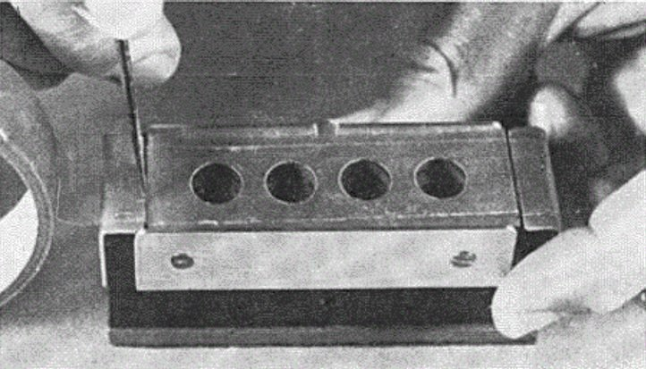
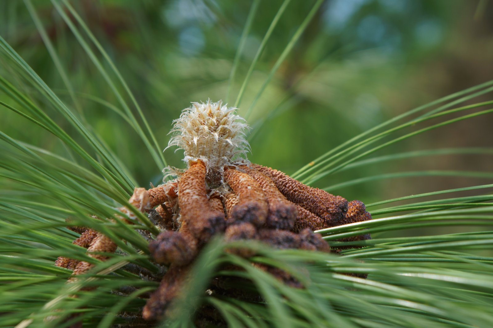
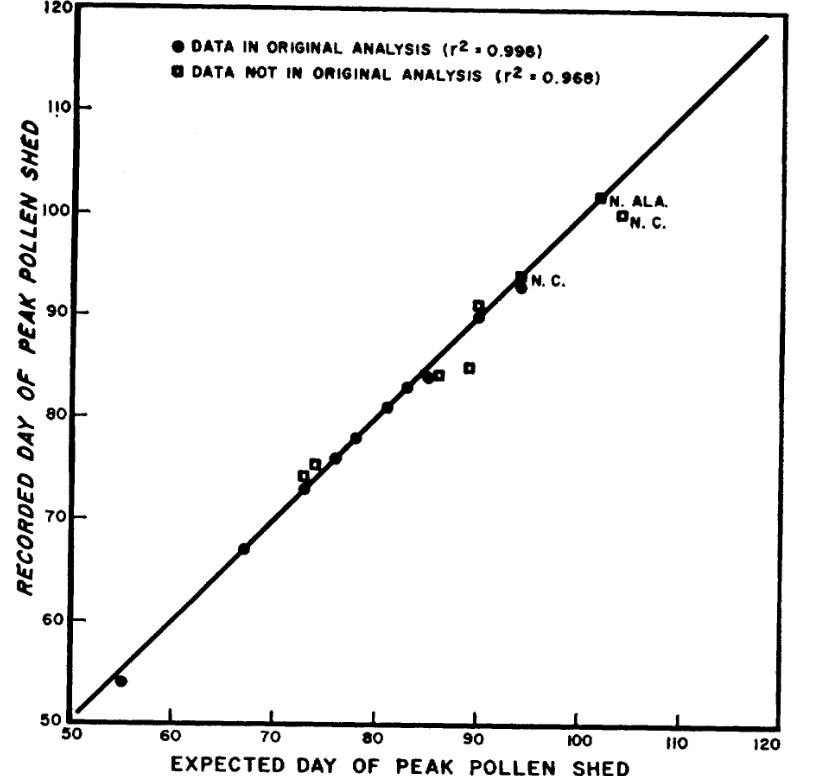

Longleaf pine pollen countdown for the Southeast
Every spring, longleaf pines release their pollen on a schedule that is dependent on temperature and time, and very predictable. The map below shows when the peak pollen season from longleaf pine is expected to occur.
Forecast
Last updated…
Loading the latest forecast…
Colors show the predicted date of peak pollen shedding inside the longleaf pine range. Hover over a dot for a chart; click it for the forecast. Click anywhere else in the range to read the date there.
How do we know?
Pine pollen shedding
Each spring I battle with allergies. It starts with itchy, watery eyes, progresses into a runny nose, and culminates in wall-shaking sneezes. I realize we are in the midst of allergy season when I find that my metallic blue SUV has been dusted with a powdery-yellow film of pine pollen. Pine pollen is a weak allergen for most people (the grains are large and low in protein), so I can’t blame it for my sneezing, although a few people do react to it1. But I can blame the pines for sullying my car—usually only a day or two after giving it a wash.
Watching pine trees shed their pollen is fascinating. Once a tree canopy is filled with ripened catkins (the pollen-producing structures), even a slight breeze can trigger the pollen to release. As the branches gently jostle, a yellow cloud billows forth, rolling slowly from the needles before the yellow haze disappears into the wind. Whole stands of pine may erupt their pollen during the same gust of wind.
Without clocks and calendars, many plants rely on environmental cues for reproductive events. Successful reproduction is more likely when pollen release happens while female cones are most receptive. So, it should not be surprising that pollen release is so well-timed to weather events.
Although allergy season surprises me each year, the timing of pollen shedding in pines is remarkably predictable. In 1973, USDA Forest Service scientist, Bill Boyer, discovered a way to successfully predict peak pine pollen shedding within just a day or two using only air temperature records and some Scotch® tape.
Boyer worked for the USDA Forest Service – Southern Research Station in rural Brewton, Alabama. For decades, he conducted painstaking work to study the reproductive patterns of longleaf pine. He was interested in the longleaf pine ecosystem because it once stretched over 90 million acres in the southeastern U.S., but due to unsustainable logging and land use changes throughout the 19th and 20th centuries, the ecosystem was reduced to only 5% of its historic range2. Boyer wanted to learn more about reproduction in longleaf pine to help conservationists understand how to reestablish and manage the species, and eventually help it recover.
Boyer’s pollen experiment
For 10 consecutive years (1957 – 1966), Boyer set out tiny pollen traps that allowed him to carefully track pollen shedding in the pines surrounding his office building in the months before and after peak pollen season3. The traps were nothing more than a glass microscope slide wrapped with bit of Scotch® tape—sticky side out4. The traps were laid out to capture a sample of the day’s airborne pollen. Boyer replaced them every 2-3 days. Using a microscope, he meticulously counted the density of pollen grains on each slide allowing him to track how much pollen was shed on different days each spring.

Boyer knew that many biological processes depend on environmental conditions, so it was logical to study the role of temperature in pollen shedding. Pines have small, flower-like structures known as catkins that are responsible for producing pollen. Boyer hypothesized that catkins grow and develop rapidly on warm days, but their development could be stifled by cool temperatures. When examining his ten years of pollen and temperature records, he made an important discovery.

Boyer found that for longleaf pine, catkin development advanced only when temperatures climbed above 50 °F. For each hour that temperatures were above 50 °F, the development of the catkins would slowly advance, ratcheting them closer and closer to maturity.

Boyer used a measure called a heat sum to predict the exact day the catkins would mature and release pollen. For every hour the air temperature stayed above 50 °F, Boyer would add up the number of degree-hours over 50 °F. For example, if temperatures were 60 °F for 1 hour (50 °F + 10 °F), then the total heat sum would increase by 10 degree-hours. If the temperature averaged 70 °F over the next hour (50 °F + 20 °F), the heat sum would increase by another 20 degree-hours. (Boyer worked from hourly temperature readings; the map estimates the same thing from each day’s high and low, as described in the methodology section.) In the chart for any station (hover over or click a dot on the map above), the red line tracks the slow accumulation of the heat sum for this year. As the year progresses, the actual heat sum requirement steadily decreases (blue line). By the time the accumulated heat sum exceeds the required threshold, longleaf pine catkins have reached maturity and the pollen is ready to shed.
Boyer’s legacy
Boyer’s research laid the foundation for much of the modern-day research on longleaf pine reproduction. In addition to meticulous pollen counts, Boyer initiated a long-term survey of pine cone production across the Southeast in 19585. Using only binoculars, he selected a group of trees in several areas throughout the region, and counted each cone produced to learn more about the drivers of reproductive success. These cone surveys are continued by his successors at the Southern Research Station, and they continue to lead to discoveries in pine reproduction to this day6–8.
Today, what started as Boyer’s curiosity has become an invaluable record, now more than six decades long, of longleaf pine cone production across the southeastern U.S. In 2024, our research team used these data to answer a perplexing question about longleaf pine cones. Cone production in some pines is extremely variable. This is a challenge because to naturally regenerate the species, forest managers need to anticipate favorable cone production to effectively schedule prescribed burns that help improve germination. Using the cone surveys initiated by Boyer, we discovered that hurricanes were a big driver of cone production. By combining cone counts by Boyer, weather data, and hurricane tracks, we found that precipitation from hurricanes can boost pine cone production for about 2 years8. Hurricanes are so infrequent that such a pattern is difficult to detect without long-term data. The findings suggest that even though it may be difficult to spot, hurricanes play a pivotal role in the biology and ecology of some coastal tree species.
Boyer’s foresight and long-term view of research went beyond pine reproduction and pollen shedding. His work has fostered many insights into the biology of longleaf pine. His steadfast and diligent efforts continue to advance knowledge of pollen production and the conservation and management of an iconic species of the southeastern U.S. And that contribution is nothing to sneeze at.
Behind the map
Methodology
Each morning, the map gets updated with yesterday’s temperature highs and lows. It looks at the temperature data each weather station has collected since January 1, and asks how soon that total heat accumulation reaches the level Boyer found is needed for peak pollen shedding. Stations that have already reached it get a date. For the rest, the map replays the weather from recent springs to see how soon it is expected to reach peak pollen shedding based on previous years’ weather data.
How accurate is it? In the last ten days before the peak, about nine in ten forecasts land within three days of Boyer’s crossover date; a month or more ahead, the typical miss is about four days. The full methodology covers the data, the math, the map, and the replays of past springs behind those numbers.
Read the full methodologyHide the methodology
Where the temperatures come from
The map uses the daily high and low temperature from airport weather stations retrieved from the Iowa Environmental Mesonet at Iowa State University.
Not every airport station has enough data to use. Of the 642 stations in the Southeast that report to the archive, I kept the ones with at least 15 complete January–May seasons on record since 2001. I also kept only stations within 100 km of the longleaf pine range, so the map has data beyond its edges as well as inside. That leaves 272 stations, 153 of them inside the range (Figures 4 and 5). Every part of the range is within 100 km of one of them, and 84% of it is within 50 km.

Figure 4. The 272 weather stations behind the map. Stations outside the range still help, because the smooth surface between stations is fitted using them, but only the part inside the range is drawn. Range: Little (public domain).

Figure 5. How the station list was chosen (left), and how many springs of history each station has (right). Stations keep different history lengths, and the record grows by one spring each June.
Where missing readings were found, gaps of up to three days are filled in using temperatures between the readings on either side. Longer gaps are filled with the typical heat for that day of the year, and those stations are flagged.
From temperatures to heat
Each day’s high and low give one number: the heat load accumulated that day. The method is the one Boyer used, from Lindsey and Newman (1956). It counts the degrees above 50 °F, weighted by how long the day stayed warm, and the daily totals add up from January 1. Boyer’s threshold is the total a station needs to reach on a given day for peak shedding to occur: 19,009 degree-hours on January 1, dropping by 89.26 for each day of the year that passes.
The map uses only the high and low temperatures, and estimates the daily mean as their midpoint.
The forecast
A station that has not reached its threshold yet is forecast by replaying recent springs. The heat accumulation so far this year is fixed. What is left to guess is the weather still to come. So the map takes each of the last ten springs in turn, adds that spring’s daily heat, starting tomorrow, onto this year’s total, and notes the day the total crosses Boyer’s line. Ten springs give ten dates. The range on the map is the middle half of them, and it narrows as the peak gets closer, because more of the spring has already happened.
Why ten? Springs have been getting warmer, and a forecast built from all the years since 2001 ran late in recent years, since it was leaning on cooler springs. Using only the latest ten cut the average lateness at 8–28 days ahead from 2.6 to 1.5 days, and trimmed the typical error from 3.7 to 3.4 days. Some scenarios never cross by the end of May, and those show as an open-ended range.
After spring, the map looks to the year ahead. From June to the end of December there is no new weather to add up, so the map shows a preseason outlook for the coming spring instead. Every station starts at zero heat on January 1, and the ten scenarios are simply the last ten springs replayed from the start. Nothing about this spring is known, so it is far less sharp: replaying 2011–2026 as if the forecast were made on January 1, the typical miss was 6 days, about a third of the forecasts were within 3 days and half were within 5. The outlook also ran about 3 days late on average, and in warm springs such as 2012, 2017 and 2023 it missed by 11 to 17 days. It is labeled as an outlook on the map, and it turns into a live forecast when daily updates begin in January.
From stations to a map
Between stations, the map draws a smooth surface through their predicted dates. The surface is a thin-plate spline, which behaves like a flexible sheet pinned to the stations. How stiff to make it was settled by hiding one station at a time and checking how well the rest predicted it. In a test on March 5, that error averaged about two days. The surface is drawn only inside the longleaf pine range, on a grid of roughly 5 km cells, and contour lines are drawn for every day, with heavier lines every 5 and 15 days. Every part of the range is within about 60 miles (100 km) of a station, but places far from one are the least certain.
How accurate is the forecast?
To find out how good the forecast is, I ran it on previous years as if they were happening now. For each of 16 springs (2011–2026), I made forecasts on five dates from February 1 to April 1, at all the stations that had not yet reached their threshold. Each forecast saw only the weather up to its date, plus the ten springs before it, so nothing from the future leaked in. Then I compared each forecast with the day the station really crossed. That gives 15,616 forecasts. Here is how close the predicted date was, depending on how far ahead of the peak the forecast was made:
![Four small charts for the Albany, Georgia airport station, one for each of the springs 2013, 2016, 2019, and 2025. Each shows forecasts made on Feb 1, Feb 15, Mar 1, and Mar 15. The predicted date is a dot with a green bar for the middle-half range, and a dashed red line marks the real crossing date. In 2013 and 2025 the forecasts start within about a week of the real date and settle on it. In 2016 they start about a week late, and in 2019 the first forecast is about nine days late. All close in as the date approaches.](img/methods-replay-example.png)
Figure 6. Four replays at the Albany, Georgia airport. Each dot is the forecast made on the date below it, the green bar is the middle-half range, and the dashed red line is the day the station really crossed Boyer’s line. The forecasts wander early on and settle as the date gets closer.

Figure 7. Forecast error by how far ahead the forecast was made. The box is the middle half of the forecasts, the line inside it is the median, and the whiskers reach the 5th and 95th percentiles. The dashed red line is a perfect forecast.
Forecasts get sharper as the peak pollen shedding date nears. Two replays show it (Figure 6), and the spread of the errors shows it across all of them (Figure 7). The green middle-half range does about what it promises: it holds the true date roughly half the time or better at every lead time (67%, 55%, 51% and 52%).
The forecasts also tend to run a day or two late. Most of that comes from a few warm late winters (2012, 2017, 2018 and 2023), when the peak came 3 to 7 days earlier than the recent past suggested. Without those four springs the average lateness at 1–4 weeks ahead falls from 1.8 to 0.7 days.
What the predictions can’t tell you
The replays check the heat sum, not the pollen: the “true” date is the day the same temperature data crosses Boyer’s line. This project has no pollen counts of its own, so it leans on Boyer’s own check, which found the threshold matched observed peaks with an average deviation of 0.3 day at his original sites and 1.6 days at eight later ones. And the map is a smooth surface, so it hides local detail between stations.
Data and credits
- Code and data: github.com/jbcannon/pollen-prediction, MIT licensed.
- Temperatures: daily station summaries from the Iowa Environmental Mesonet (Iowa State University), which archives NWS and FAA airport observations.
- Range map: E. L. Little Jr., Atlas of United States Trees, public domain, mirrored at wpetry/USTreeAtlas. State outlines in Figure 4 from the open PublicaMundi MappingAPI data.
- Basemap: OpenFreeMap with OpenStreetMap data, drawn with MapLibre GL JS.
- Boyer, W. D. (1973). Air temperature, heat sums, and pollen shedding phenology of longleaf pine. Ecology, 54(2), 420–426. https://doi.org/10.2307/1934351
- Lindsey, A. A., & Newman, J. E. (1956). Use of official weather data in spring time-temperature analysis of an Indiana phenological record. Ecology, 37(4), 812–823.
Methodology section drafted by Claude Sonnet 5 (Anthropic) from the project’s code and results, and reviewed and verified by the author.
References
- Gastaminza, G., Lombardero, M., Bernaola, G., Antepara, I., Muñoz, D., Gamboa, P. M., Audicana, M. T., Marcos, C., & Ansotegui, I. J. (2009). Allergenicity and cross-reactivity of pine pollen. Clinical & Experimental Allergy, 39(9), 1438–1446. https://doi.org/10.1111/j.1365-2222.2009.03308.x
- Noss, R. F., LaRoe III, E. T., & Scott, J. M. (1995). Endangered ecosystems of the United States: A preliminary assessment of loss and degradation. Biological Report - US Department of the Interior, National Biological Service, 28. Google Books
- Boyer, W. D. (1973). Air temperature, heat sums, and pollen shedding phenology of longleaf pine. Ecology, 54(2), 420–426. https://doi.org/10.2307/1934351
- Grano, C. X. (1958). Equipment Notes: A Timesaving Slide for Trapping Atmospheric Pollen. Forest Science, 4(1), 94–95. https://doi.org/10.1093/forestscience/4.1.94
- Boyer, W. D. (1987). Annual and geographic variations in cone production by longleaf pine. In Proceedings of the Fourth Biennial Southern Silvicultural Research Conference: Atlanta, Georgia, November 4-6, 1986 (General Technical Report SE-42, pp. 73–76). Southeastern Forest Experiment Station. https://research.fs.usda.gov/treesearch/972
- Guo, Q., Zarnoch, S. J., Chen, X., & Brockway, D. G. (2016). Life cycle and masting of a recovering keystone indicator species under climate fluctuation. Ecosystem Health and Sustainability, 2(6), e01226. https://doi.org/10.1002/ehs2.1226
- Chen, X., & Willis, J. L. (2023). Individuals’ Behaviors of Cone Production in Longleaf Pine Trees. Forests, 14(3), 494. https://doi.org/10.3390/f14030494
- Cannon, J. B., Rutledge, B. T., Puhlick, J. J., Willis, J. L., & Brockway, D. G. (2024). Tropical cyclone winds and precipitation stimulate cone production in the masting species longleaf pine (Pinus palustris). New Phytologist, 242(1), 289–301. https://doi.org/10.1111/nph.19381